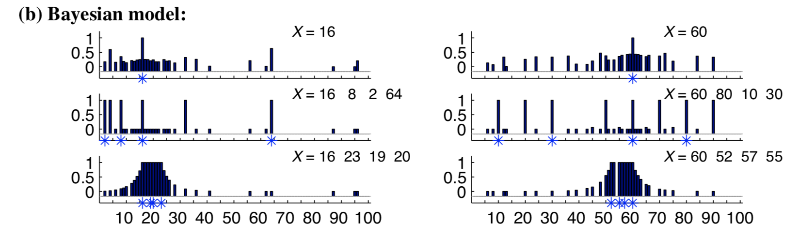

When we reasoned about continuations of sequences (e.g. ) in the Occam’s razor exercise, our hypothesis space was defined over rules: abstract arithmetic functions.
In a related task called the number game, participants were presented with sets of numbers and asked how well different numbers completed them. A rule-based generative model accurately captured responses for some stimuli (e.g. for or , participants assigned high fit to powers of two and multiples of ten, respectively). But it failed to capture others. For instance, what numbers seem like good completions of the set ? How good is 18, relative to 13, relative to 99?
We’ve implemented a rule-only model of this task for you below. Examine the posterior over rules for the following inputs: , , . For the example of just feeding in , why are some rules so strongly preferred over others, even though they are assigned equal probability under the prior? (HINT: think about the likelihood; read the section of the linked number game paper on the size principle if you’re stuck).
///fold:
var filterByInRange = function(set) {
var inRange = function(v) {v <= 100 && v >= 0};
return _.uniq(filter(inRange, set))
}
var genEvens = function() {
return filter(function(v) {return v % 2 == 0}, _.range(1, 101))
}
var genOdds = function() {
return filter(function(v) {return (v + 1) % 2 == 0}, _.range(1, 101))
}
var genMultiples = function(base) {
var multiples = map(function(v) {return base * v}, _.range(100))
return filterByInRange(multiples)
}
var genPowers = function(base) {
var powers = map(function(v) {return Math.pow(base, v)}, _.range(100))
return filterByInRange(powers)
}
var inSet = function(val, set) {
return _.includes(set, val)
}
var getSetFromHypothesis = function(rule) {
var parts = rule.split('_')
return (parts[0] == 'multiples' ? genMultiples(parts[2]) :
parts[0] == 'powers' ? genPowers(parts[2]) :
parts[0] == 'evens' ? genEvens() :
parts[0] == 'odds' ? genOdds() :
console.error('unknown rule' + rule))
};
///
// Considers 4 kinds of rules: evens, odds, and multiples and powers of small numbers <12
var makeRuleHypothesisSpace = function() {
var multipleRules = map(function(base) {return 'multiples_of_' + base}, _.range(1, 12))
var powerRules = map(function(base) {return 'powers_of_' + base}, _.range(1, 12))
return multipleRules.concat(powerRules).concat(['evens', 'odds'])
}
// Takes an undordered array of examples of a concept in the number game
// and also a test query (i.e. a new number that the experimenter is asking about)
var learnConcept = function(examples, testQuery) {
Infer({method: 'enumerate'}, function() {
var rules = makeRuleHypothesisSpace()
var hypothesis = uniformDraw(rules)
var set = getSetFromHypothesis(hypothesis)
mapData({data: examples}, function(example) {
// note: this likelihood corresponds to size principle
observe(Categorical({vs: set}), example)
})
return {hypothesis, testQueryResponse : inSet(testQuery, set)}
});
}
var examples = [3]
var testQuery = 12
var posterior = learnConcept(examples, testQuery)
marginalize(posterior, function(x) {return x.hypothesis})
Now supplement this model to include similarity-based hypotheses (represented most simply as intervals).
///fold:
var filterByInRange = function(set) {
var inRange = function(v) {v <= 100 && v >= 0};
return _.uniq(filter(inRange, set))
}
var genEvens = function() {
return filter(function(v) {return v % 2 == 0}, _.range(1, 101))
}
var genOdds = function() {
return filter(function(v) {return (v + 1) % 2 == 0}, _.range(1, 101))
}
var genMultiples = function(base) {
var multiples = map(function(v) {return base * v}, _.range(100))
return filterByInRange(multiples)
}
var genPowers = function(base) {
var powers = map(function(v) {return Math.pow(base, v)}, _.range(100))
return filterByInRange(powers)
}
var inSet = function(val, set) {
return _.includes(set, val)
}
///
// TODO: add a condition to this function that
// calls genSetFromInterval with the parameters extracted from
// your hypothesis string.
// *Hint*: If you're having trouble converting fron strings to integers try the lodash function _.parseInt().
var getSetFromHypothesis = function(rule) {
var parts = rule.split('_')
return (parts[0] == 'multiples' ? genMultiples(parts[2]) :
parts[0] == 'powers' ? genPowers(parts[2]) :
parts[0] == 'evens' ? genEvens() :
parts[0] == 'odds' ? genOdds() :
console.error('unknown rule' + rule))
};
// TODO: this function should construct the interval
// of integers between the endpoints a and b
var genSetFromInterval = function(a, b) {
// Your code here
}
var makeRuleHypothesisSpace = function() {
var multipleRules = map(function(base) {return 'multiples_of_' + base}, _.range(1, 12))
var powerRules = map(function(base) {return 'powers_of_' + base}, _.range(1, 12))
return multipleRules.concat(powerRules).concat(['evens', 'odds'])
}
// TODO: build a list of all possible hypothesis intervals between 1 and 100.
var makeIntervalHypothesisSpace = function() {
// Note: Don't change start and end.
var start = 1
var end = 100
// Your code here...
// *Hint* Make sure to model this after makeRuleHypothesisSpace, which returns a list of strings that are
// parsed in getSetFromHypothesis. E.g. Think of a format like 'between_a_and_b'.
return ...
}
// Takes an undordered array of examples of a concept in the number game
// and also a test query (i.e. a new number that the experimenter is asking about)
var learnConcept = function(examples, testQuery) {
Infer({method: 'enumerate'}, function() {
var rules = makeRuleHypothesisSpace()
// TODO: build space of intervals
var intervals = ...
// TODO: implement a hypothesis prior that first assigns probability *lambda* to rules
// and (1- lambda) to intervals, then samples uniformly within each class
var hypothesis = ...
var set = getSetFromHypothesis(hypothesis)
mapData({data: examples}, function(example) {
// note: this likelihood corresponds to size principle
observe(Categorical({vs: set}), example)
})
return {hypothesis, testQueryResponse : inSet(testQuery, set)}
});
}
var examples = [3]
var testQuery = 12
var posterior = learnConcept(examples, testQuery)
marginalize(posterior, function(x) {return x.hypothesis})
Now examine the sets , , and . Sweep across all integers as testQueries to see the ‘hotspots’ of the model predictions. What do you observe?
Look at some of the data in the large-scale replication of the number game here. Can you think of an additional concept people might be using that we did not include in our model?
Can you replicate the results from the paper (reproduced in figure below) by adding in the other hypotheses from the paper?

In a previous exercise we explore the Causal Power (CP) model of causal learning. Griffiths and Tenenbaum [[email protected]], “Structure and strength in causal induction”, hypothesized that when people do causal induction they are not estimating a power parameter (as in CP) but instead they are deciding whether there is a causal relation at all – they called this model Causal Support (CS).
Implement the CS model by modifying the CP model:
var observedData = [{C:true, E:false}]
var causalPost = Infer({method: 'MCMC', samples: 10000, lag:2}, function() {
// Is there a causal relation between C and E?
// ...your code here
// Causal power of C to cause E
var cp = uniform(0, 1)
// Background probability of E
var b = uniform(0, 1)
mapData({data: observedData}, function(datum) {
// The noisy causal relation to get E given C
var E = // ...your code here
condition(E == datum.E)
})
return // ...your code here
})
viz.marginals(causalPost)
Hint: In the CP model the effect was generated from var E = (datum.C && flip(cp)) || flip(b). You will need to extend this to capture the idea that the cause can only make the effect happen if there is a causal relation at all.
Inference with the MCMC method will not be very efficient for the model you wrote above because the MCMC algorithm is using the single-site Metropolis-Hastings procedure, changing only one random choice at a time. (To see why this is a problem, think about what happens when you try to change the choice about whether there is a causal relation.)
To make this more efficient, construct the marginal probability of the effect directly and use it in an observe statement:
var observedData = [{C:true, E:false}]
var causalPost = Infer({method: 'MCMC', samples: 10000, lag:2}, function() {
// Is there a causal relation between C and E?
// ...your code here
// Causal power of C to cause E
var cp = uniform(0, 1)
// Background probability of E
var b = uniform(0, 1)
var noisyOrMarginal = //..your code here
mapData({data: observedData}, function(datum) {
observe(noisyOrMarginal(...yourcodehere),datum.effect)
})
return // ...your code here
})
viz.marginals(causalPost)
Hint: You can do this either by figuring out the noisy-or marginal probabilities using math, or by asking WebPPL to do so using Infer.
Fig. 1 of [[email protected]] shows a critical difference in the predictions of CP and CS: when the effect happens just as many times with the cause absent as whith the cause present. Show by running simulations the difference between CP and CS in these cases.
Explain why CS shows this effect. You explanation should involve the Bayesian Occam’s razor.
Hint: Recall that CS is selecting between two models (one where there is a causal relation and one where there isn’t).
Try an informal behavioral experiment with several friends as experimental subjects to see whether the Bayesian approach to curve fitting given on the wiki page corresponds with how people actually find functional patterns in sparse noisy data. Your experiment should consist of showing each of 4-6 people 8-10 data sets (sets of x-y values, illustrated graphically as points on a plane with x and y axes), and asking them to draw a continuous function that interpolates between the data points and extrapolates at least a short distance beyond them (as far as people feel comfortable extrapolating). Explain to people that the data were produced by measuring y as some function of x, with the possibility of noise in the measurements.
The challenge of this exercise comes in choosing the data sets you will show people, interpreting the results and thinking about how to modify or improve a probabilistic program for curve fitting to better explain what people do. Of the 8-10 data sets you use, devise several (“type A”) for which you believe the WebPPL program for polynomial curve fitting will match the functions people draw, at least qualitatively. Come up with several other data sets (“type B”) for which you expect people to draw qualitatively different functions than the WebPPL polynomial fitting program does. Does your experiment bear out your guesses about type A and type B? If yes, why do you think people found different functions to best explain the type B data sets? If not, why did you think they would? There are a number of factors to consider, but two important ones are the noise model you use, and the choice of basis functions: not all functions that people can learn or that describe natural processes in the world can be well described in terms of polynomials; other types of functions may need to be considered.
Can you modify the WebPPL program to fit curves of qualitatively different forms besides polynomials, but of roughly equal complexity in terms of numbers of free parameters? Even if you can’t get inference to work well for these cases, show some samples from the generative model that suggest how the program might capture classes of human-learnable functions other than polynomials.
You should hand in the data sets you used for the informal experiment, discussion of the experimental results, and a modified WebPPL program for fitting qualitatively different forms from polynomials plus samples from running the program forward.